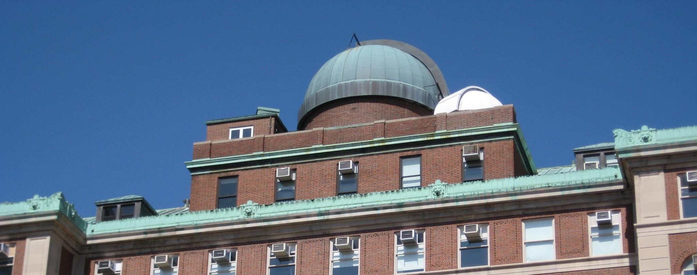

Public Talks and Observing
Every month (except for January), we host a public talk on Columbia's campus!
These talks focus on an astronomy topic, are free, and are fun for all ages including kids.
We'll start the night with trivia and announcements, hear from our speaker, have Q&A, and then end with a raffle of
Columbia Astro merch.
If the weather is clear, we will host observing after the event.
All of our talks are livestreamed on Youtube. Past talks can also be found on our channel.
August's Public Talk + Mandatory Registration Link:
Reading the Shrapnel of Cosmic Fireworks
Pupin Hall 301 Friday, August 28 at 8:00pm -- Join us in for a public talk with
Dr. Rebecca Diesing
who will explore how we can uncover the Universe's most extreme events.
Everyone must register to get access to Columbia's campus. Click on the image to register by midnight August 26!
The registration form will be released two weeks before each talk. Explore the calendar on the right to directly add the events to your calendar! Hope to see you there.

After each talk (around an hour after the event start), we will head outside to look at objects (planets, stars, nebulae, and galaxies) in our night sky if the weather is clear.
We will have 1-2 telescopes on campus level (no stairs to access) and will host observing in the dome on top of Pupin, the Rutherfurd Observatory.
The Rutherfurd Observatory is a historic dome and requires 2 flights of stairs to enter.
Check out the weather forecast below! We can't observe if the cloud cover is predicted to be 40% or over.
NEW YORK Morningside Heights
 White to dark blue means overcast to clear.
White to dark blue means overcast to clear.
We have to abide by Columbia's guest policy.
All guests (anyone without a CUID) needs to register for the public talk by the deadline.
All adults will receive a QR code during the week of the event. Each adult must present that QR code and an ID to the security staff
at the 116th and Broadway gates.
Minors still must be registered but will not receive a QR code or need to present an ID.
— Astronomy Outreach Team
Unless otherwise noted, all of our outreach events are held in the
Pupin Physics Laboratory. Pupin (pronounced pyoo' pin) houses the Physics and Astronomy
Departments in the northwest corner of Columbia University's main campus. The main entrance to
the Columbia University campus is located at Broadway and 116th Street in the Morningside
Heights neighborhood of Manhattan.
Walking from the 116th Street-Columbia University station to Pupin Hall.